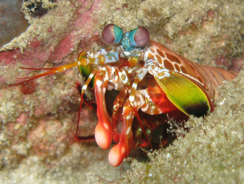
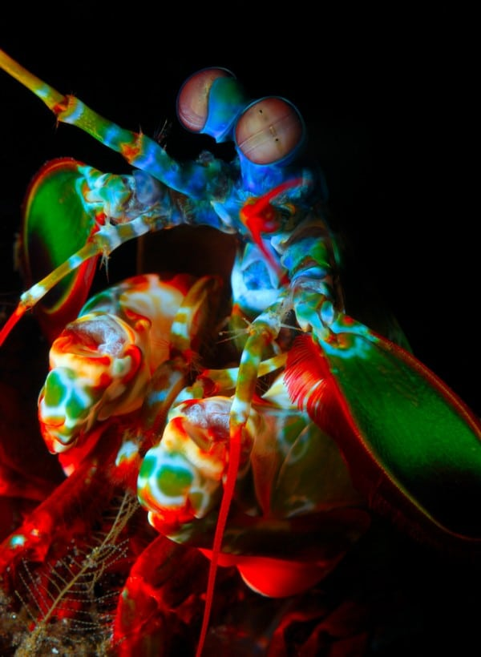
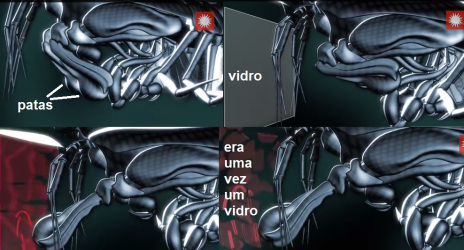

Fatos sobre o Stomatopoda
Conheça o estomatópode
A lagosta-boxeadora (Odontodactylus scyllarus), chamada popularmente de tamarutaca ou de lacraia-do-mar no Brasil, é um crustáceo marinho pertencente à ordem Stomatopoda, do qual fazem parte mais de 450 espécies de estomatopódes, lagostas com apêndices em forma de lâmina ou em forma de bola, como a lagosta boxeadora.

Sua informação tabular consiste em:
Reino: Animalia, Filo: Arthropoda, Subfilo:Crustacea, Classe: Malacostraca, Subclasse: Hoplocarida e Ordem: Stomatopoda.
Apresentam uma grande variação de tamanho, que pode ir de poucos milímetros até aproximadamente 40 cm nas espécies maiores. Eles vivem em fundo consolidado, lodoso ou ainda arenoso, onde cavam seus buracos ou aproveitam-se dos orifícios deixados por outros animais para neles se instalar. São animais exclusivamente carnívoros, alimentando-se de camarões, caranguejos, moluscos, peixes e até mesmo outros da mesma ordem.
Olhos muito especiais
Esses animais possuem o mais complexo sistema de visão de cores do mundo animal, pois enxergam 12 cores primárias, correspondentes aos 12 pigmentos distintos presentes em sua retina.  Além de possuírem a habilidade de ver luz polarizada circularmente, o que levou a estudos sobre o mecanismo que opera nos seus olhos e se este pode ser replicado para ser utilizado na leitura de CDs e de outros aparelhos de armazenamento de informação óptica.
O soco MAIS PODEROSO do mundo
São capazes de enfiar um murro a uma velocidade superior aos 80 km/h. Este é o murro mais rápido anotado de qualquer animal existente, com mais de 1500 N de força. A superfície dos seus apêndices que desferem os punhos são cobertos com uma camada extremamente densa de hidroxiopatite, disposta de uma maneira muito resistente à possibilidade de fracturar.  O murro é tão rápido que formam bolhas de cavitação entre o alvo e o apêndice; estas bolhas ao colapsarem libertam ondas de choque capazes de atordoar ou matar as suas presas. Desta forma, as presas sofrem dois ataques, o murro inicial e o colapso da bolha.